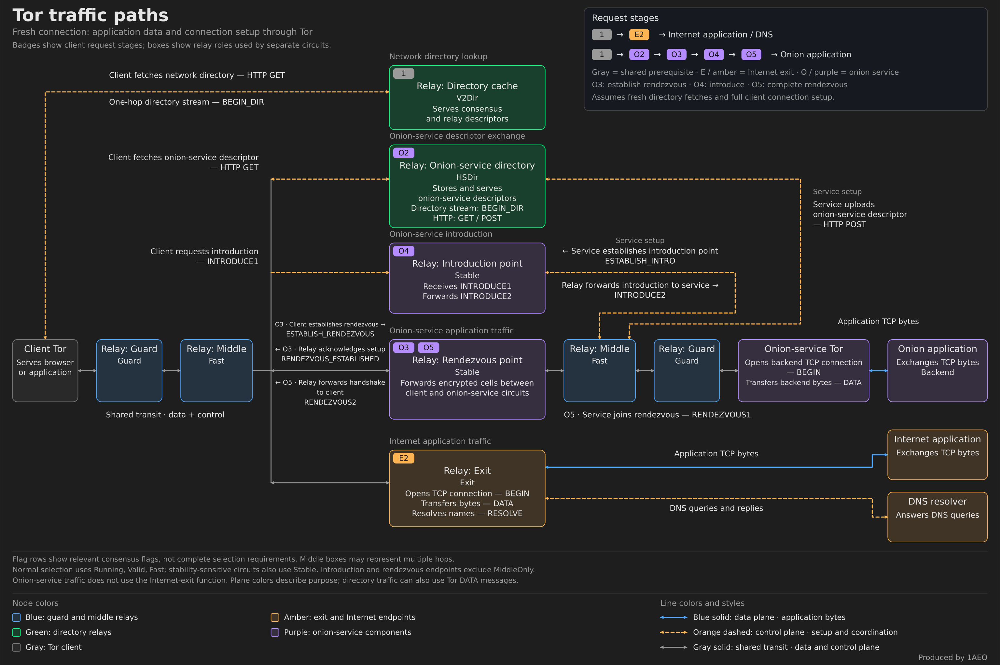

Tor Under Attack: Mapping the Pressure Points
An attacker can exhaust a Tor relay while many of its metrics still look normal. These diagrams map the pressure points documented in our June–July denial-of-service (DoS) reporting and other relay operators’ accounts.

Read the Paths #
- 1 — Learn the network. The client fetches consensus and relay information from a directory cache through the illustrated one-hop
BEGIN_DIRstream. - E2 — Reach the Internet. A guard–middle–exit circuit reaches the Internet.
BEGINrequests a TCP connection; the exit resolves hostnames when needed.DATAcarries stream bytes;RESOLVErequests a standalone DNS lookup. - O2–O5 — Reach an onion service. The service has already established introduction points on existing Tor relays and uploaded its descriptor to HSDir relays. The client anonymously fetches that descriptor (O2), prepares a rendezvous point (O3), and sends
INTRODUCE1to an introduction point, which forwardsINTRODUCE2to the service (O4). The service joins through its own circuit (O5). The rendezvous relay joins the circuits and forwards handshake material for the client to verify. Application streams then reach the backend. This path uses no Internet exit.
These command names refer to Tor messages. External applications exchange ordinary TCP bytes; resolvers receive DNS queries. HSDirs store descriptors, introduction points forward introductions, and rendezvous points join circuits. One relay can perform several roles.
Where DoS and Overload Have Been Reported #
Red markers cover reports within April 16–October 16, 2026; amber markers show older exit examples. They identify reported pressure. Cause and intent are not established in every case.
![Tor traffic paths with numbered pressure markers. Red 1: TCP listener queues; 2: circuit handshakes and retained state; 3: circuit protocol-error handling; 4: HSDir descriptor cache; 5: introduction requests; 6: outbound directory bytes; 7: incoming BEGIN_DIR setup activity, with opposite arrows at the shared directory boundary. The specific directory role, document and HTTP method were not identified. Amber H1 marks historical 2022 exit TCP pressure; H2 marks suspected 2022 resolver flooding. Numbers correspond to the linked bullets below.](images/tor-traffic-paths-dos-history-v2.png)
- 1 — TCP listener queues, June–July 2026. Kernel counters showed listener pressure before Tor could accept connections. The Flood Below Tor.
- 2 — Circuit work + state, June–July 2026. Circuit-handshake assignments and retained state surged, taxing CPU and memory while bandwidth barely changed. Circuit-creation wave.
- 3 — Protocol errors, July 2026. Protocol-error close events surged on our relays; the counter does not identify one command, circuit role or set of unique circuits. Malformed-circuit phase.
- 4 — HSDir cache pressure, late June 2026. Onion-service descriptor caches repeatedly reached their limits and were pruned. Descriptor-cache pressure.
- 5 — Introductions, June–July 2026. Introduction points rejected excess requests before forwarding them to services as
INTRODUCE2. Introduction-request wave. - 6 — Response-byte surge, July 19–24, 2026. Outbound directory bytes surged. Abusive fetching and concentrated demand remained competing explanations. Directory surge.
- 7 — BEGIN_DIR setups, September–October 2026. Operators reported surges in
BEGIN_DIRsetup activity, including about 700 counter events per second on one exit. These events precede HTTP processing; their cause remained unresolved. Tor-relays reports. - H1 — Exit TCP, October 2022. Artikel10 reported hundreds of thousands of connections per exit server to one destination while normal traffic fell sharply. Historical operator report.
- H2 — Exit DNS, March 2022. Tor Network Health found almost 80 exits with DNS failures and investigated suspected Unbound flooding; whether it was intentional was unresolved. Historical Network Health report.
Our year-long review also records April 18 and June 15 overload peaks, plus July 27 queue pressure. These observations do not locate additional attack paths.
Measure the Layer That Is Failing #
A failed page load alone cannot identify the bottleneck. Compare host TCP counters, circuit activity, memory, directory work and introduction rejections alongside bandwidth. Tor's defenses act at different stages. Aggregate measurements help locate pressure without recording users' destinations or traffic contents.
Related reading: The HSDir Population Decline • Defending Against Circuit-Building DoS